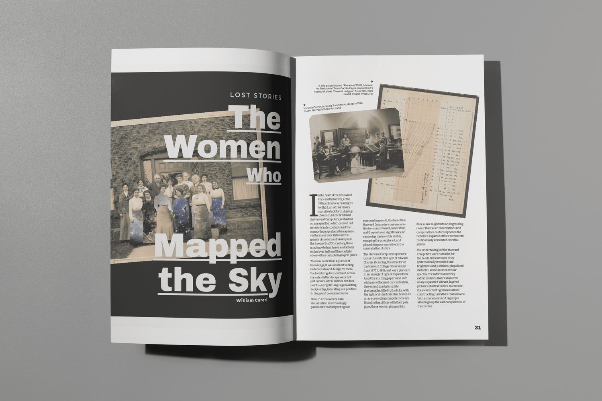

The Women Who Mapped the Sky
The Harvard Computers were a group of women who helped to track and document the night sky. An interview with Thom Burns, Curator of Astronomical Photographs at Harvard University, this unveils a long lost story in data visulization.
Published in Nightingale Issue 4: Emotion. Design by Julie Brunet; editing by Emily Barone. Photos provided by Harvard University.
Eligible for purchase here.
